Sejarah
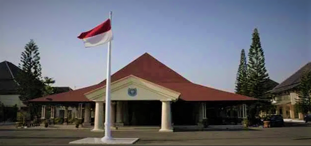
Menurut cerita Babad Dermayu, Raden Arya Wiralodra berkaitan erat dengan berdirinya kota Indramayu.
Nama Indramayu di ambil dari nama istri Raden Aryalodra yang bernama Darma Ayu.
Arya Wiralodra adalah utusan dari Demak yang di tempatkan di Indramayu sebagai bagian dari strategi Islamisasi dan juga sebagai langkah politis untuk pertahanan perdagangan dengan Portugis yang telah menguasai Malaka pada 1511 Masehi.
Raden Wiralodra akhirnya menjadi kepala daerah di Indramayu dengan gelar Indrajaya (7 Oktober1527).
Geografis
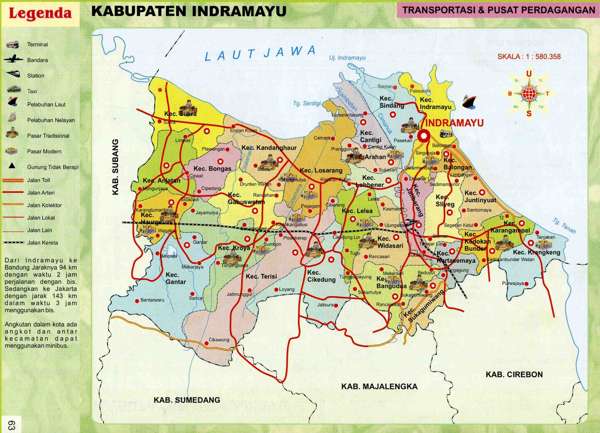
Apabila dilihat dari letak geografisnya Kabupaten Indramayu terletak pada 107° 52 ° - 108° 36 ° Bujur Timur dan 6° 15 ° - 6° 40 ° Lintang Selatan. Sedangkan berdasarkan topografinya sebagian besar merupakan dataran atau daerah landai dengan kemiringan tanahnya rata-rata 0 – 2 %.
Keadaan ini berpengaruh terhadap drainase, bila curah hujan cukup tinggi, maka di daerah-daerah tertentu akan terjadi genangan air. Kabupaten Indramayu terletak di pesisir utara Pulau Jawa dan memiliki 10 kecamatan dengan 35 desa yang berbatasan langsung dengan laut dengan panjang garis pantai 114,1 Km.
Wisata
Indramayu merupakan sebuah Kabupaten di Jawa Barat, Kabupaten ini memiliki sejuta pesona dan panaroma alam yang menakjubkan dan masih banyak yang tersembunyi, sehingga masih banyak orang yang belum mengetahui akan keindahan dan tempat keren yang ada di Indramayu.
Indramayu punya banyak tempat objek wisata keren, mulai dari Situs budaya, situs bersejarah, spot foto foto kekinian, sampai air terjun yang sangat memanjakan mata.
1) Hutan Mangrove Karangsong
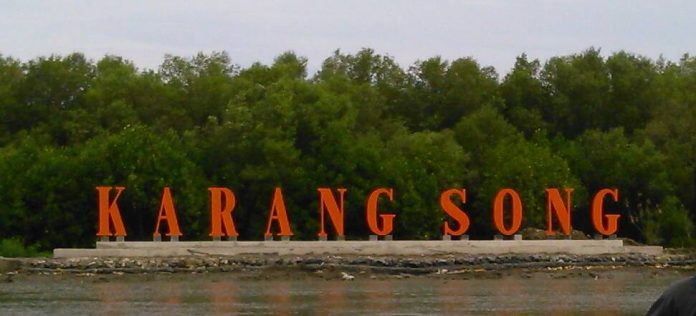
Indramayu memang tidak dilalui oleh jalur utama pantura atau pantai utara. Tetapi keberadaannya kini terus menjadi perbincangan banyak orang karena salah satu obyek wisatanya yang kini menjadi primadona wisatawan baik dari Indramayu maupun luar Indramayu.
Obyek wisata tersebut adalah Pantai dan Hutan Mangrove Karangsong Indramayu. Untuk menuju lokasi ini sangatlah mudah. Jika Anda dari Jakarta tinggal menuju lohbener terus menuju Bangkir sampai di Jembatan Cimanuk dekat Masjid Agung dan Alun-alun Indramayu, Anda tinggal belok ke kiri mengikuti Jalan Siliwangi nanti akan ketemu dengan gapura besar Karangsong kurang lebih 3 kilometer untuk sampai ke lokasi.
Sementara untuk yang dari arah Cirebon Anda bisa mengambil jalan dari perempatan bunderan kijang belok ke kanan menuju Jalan Pahlawan, setelah itu ambil Jalan Tambak. Anda tinggal mengikuti jalan tersebut nanti akan menjumpai pertigaan lalu belok ke kanan kurang lebih 1 km Anda akan menjumpai laut.
Pengunjung akan merasakan sendiri menyusuri sungai ke lokasi Hutan Mangrove Karangsong. Anda yang baru naik perahu dan melewati hutan ini tentu akan merasa seperti para penduduk yang sedang menaiki perahu di daerah Sumatera dan Kalimantan. Untuk keamanan sebenarnya pengelola sudah menyediakan pelampung tapi jarang digunakan karena memang lokasinya tidak terlalu jauh.
Setelah sampai di pemberhentian perahu, Anda akan melihat menara pandang yang tinggi untuk menikmati keindahan sekitar pohon mangrove dari atas, Anda juga akan melihat burung-burung beterbangan ke sana kemari di atas hutan tersebut. Tempat ini tentu banyak digunakan oleh pengunjung untuk kumpul bersama, makan bareng dan istirahat.
2) Curug Citayam indramayu
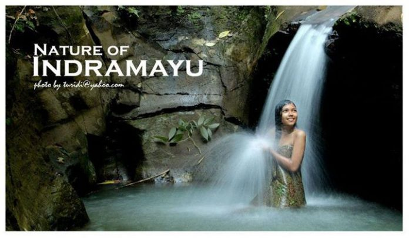
Secara umum wilayah Kabupaten memiliki topografi yang landai. Namun ternyata Kabupaten Indramayu memiliki destinasi wisata air terjun. Curug Citayam, berada di Cikawung, Indramayu. Cocok untuk olahraga trekking sebelum sampai di lokasi air terjun.
Lokasi curug citayam indramayu ini ada di desa cikawung, Indramayu. jarang orang yang mengetahui tempat wisata ini karena potensinya memang belum banyak di eksplorasi oleh pemerintah setempat. Selain itu juga letaknya yang cukup sulit di jangkau menjadikan curug citayam masih terbilang sepi pengunjung.
Tetapi kalau soal keindahan dan wisata alamnya anda pasti akan takjub, karena curug ini memiliki pancuran air langsung dari mata air, nikmatnya saat liburan ke curug citayam indramayu adalah anda bisa melepas penat dan lelah setelah perjalanan jauh dengan mandi di curug ini.
3) Pulau Biawak
 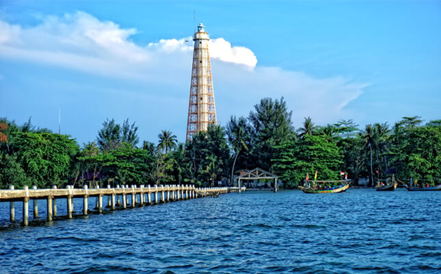
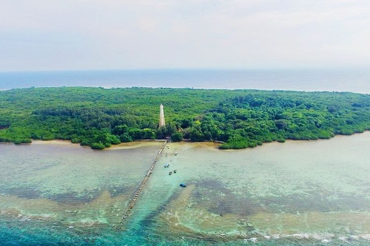
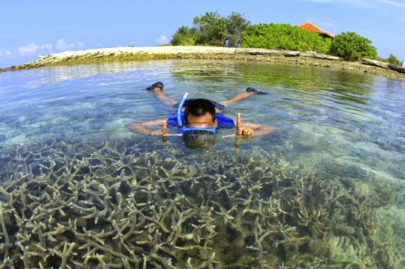
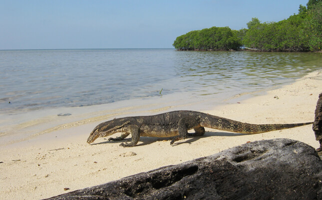
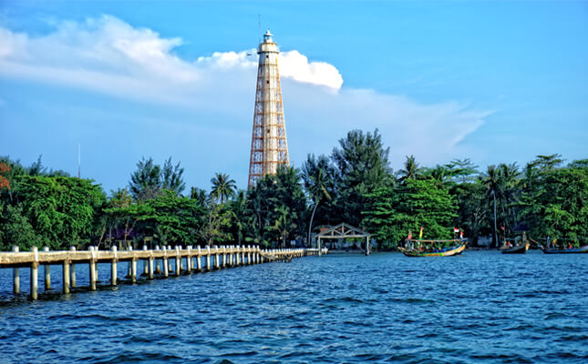
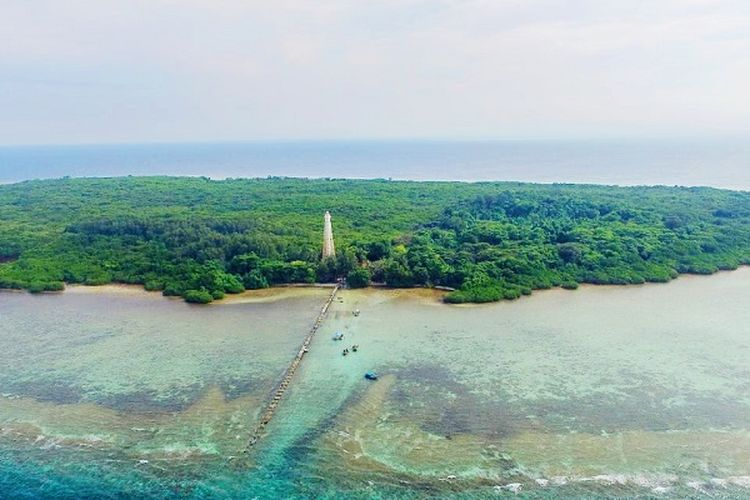
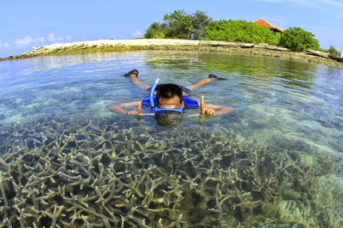
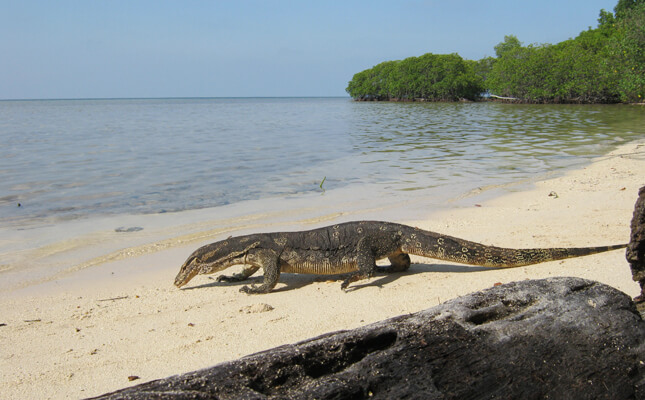
Pulau Biawak merupakan salah satu tempat wisata di Indramayu yang menyuguhkan pesona indahnya pemandangan bawah laut, hamparan pasir putih, serta banyaknya biawak di pulau ini. Itu sebabnya mengapa pulau ini dinamakan Pulau Biawak. Padahal dulunya pulau ini bernama Pulau Rakit.
Pulau Biawak, terdapat dua pulau lain di kawasan ini, yakni Pulau Gosong dan Pulau Candikian. Akan tetapi, jika dibandingkan dengan kedua pulau tersebut, Pulau Biawak jauh lebih cantik. Karena keasriannya yang benar-benar masih terjaga. Maklumlah kedua pulau tersebut hanya sebatas hamparan karang.
Bahkan tidak sedikit terjadi kerusakan di pulau tersebut akibat adanya lokasi kilang minyak Pertamina Unit Pengolahan VI Balongan. Lain dengan Pulau Biawak yang masih lengkap, bahkan banyak yang bilang pulau ini masih belum tersentu. Sayangnya, keindahan dan keeksotisan pulau ini belum terekspos sampai ke dunia luar. Bak surga tersembunyi di kota mangga.